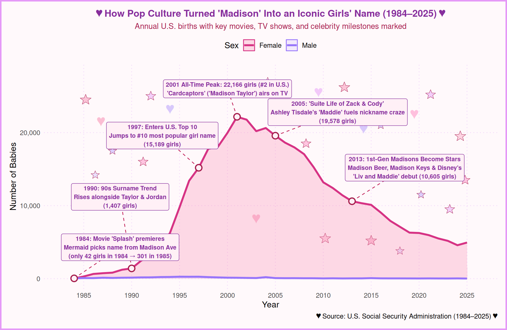

✨🧸 The Rise and Reign of ‘Madison’ (1984–2025) 🍼✨
Following the March 1984 release of the romantic comedy Splash—in which Daryl Hannah’s mermaid character chooses her name from a Madison Avenue street sign—“Madison” transformed from a rare male surname (just 42 baby girls in 1984) into a cultural phenomenon. Fueled by the 1990s surname-as-first-name trend, TV characters, and eventually the first generation of celebrity Madisons born after Splash, the name peaked at 22,166 girls (#2 in the U.S.) in 2001.